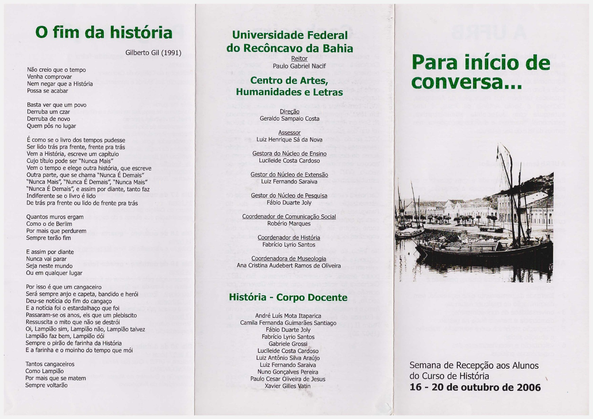

A recepção aos alunos registra a graduação no contexto de implantação da recém-criada UFRB.
Um documento fundador
“Para início de conversa...”
Entre 16 e 20 de outubro de 2006, o Curso de História realizou sua Semana de Recepção aos Alunos. O folder produzido para a atividade é um dos primeiros registros hoje reunidos neste memorial e permite observar a graduação ainda em seus momentos iniciais de funcionamento.

O começo de uma conversa
O documento apresenta a Semana de Recepção aos Alunos do Curso de História, realizada de 16 a 20 de outubro de 2006. Além do título que dá identidade à atividade, o folder registra a estrutura inicial do Centro de Artes, Humanidades e Letras, a coordenação de História e o corpo docente daquele momento.
Visto vinte anos depois, “Para início de conversa...” ganha um significado particular. A expressão reapareceria na comemoração do primeiro decênio do curso, em 2016, e serve agora como uma das referências para a construção deste memorial.
O folder preserva nomes de gestores, coordenação e docentes, permitindo reconstruir parte da configuração institucional inicial.
O “início de conversa” de 2006 seria retomado dez anos depois como “continuando a conversa...”.
Memórias da fundação do curso
Confissões românticas em tempos irônicos
Em Confissões românticas em tempos irônicos, Nuno Gonçalves Pereira recorda sua chegada a Cachoeira e os primeiros anos de implantação da Universidade Federal do Recôncavo da Bahia. Escrito em 2021 como apresentação de uma coletânea de trabalhos de egressos do curso de História, o texto reúne lembranças de pessoas, lugares, expectativas e experiências vividas naquele período. Reproduzimos abaixo três passagens de suas memórias.
Não quero recordar o nome do ano que cheguei nessa cidade.
Uma pequena biblioteca, um computador e uma cadela – Helena da Catingueira.
Estacionei o marrom – um automóvel GOL, modelo 86 – no bar do Carlito.
E tudo começou.
Tudo era novo e havia um grande vazio clamando por ser habitado, por formas consistentes. E nos tocava criar essas formas. Nos tocava habitar o vazio. Não tínhamos alunos. Não tínhamos prédio. Não tínhamos nada. Tudo estava por ser inventado. Nos tocaria criar um universo e isso soava, em muitos sentidos, como presságio de uma aventura demasiado grandiloquente. Bons ventos sopravam.
O dono da venda de licores comprou uma máquina de xerox. Os donos das casas aumentavam os preços dos aluguéis na cara dura, à luz do dia. Os alunos foram chegando. Os professores foram chegando. A cidade nos olhava e nós olhávamos a cidade.
Nuno Gonçalves Pereira, Confissões românticas em tempos irônicos, Cachoeira, 12 de fevereiro de 2021.